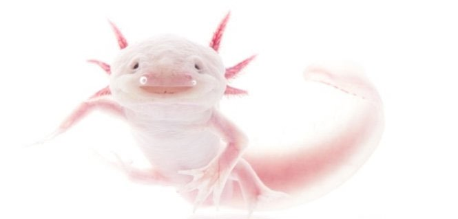
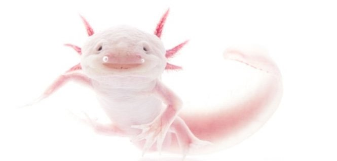

Nhiếp ảnh gia Robin Moore vừa ra mắt độc giả thế giới bộ ảnh những loài lưỡng cư hiếm nhất thế giới, đang đứng trước nguy cơ tuyệt chủng cao.
Dự án này bắt đầu từ 2010 kéo dài đến tận nay, với hi vọng góp phần tiếng nói trong việc bảo tồn những loài lưỡng cư cực kì hiếm, có nguy cơ tuyệt chủng cao trên thế giới.
 

Giông axolotl, được biết với cái tên “quái vật nước” hay “cá biết đi của Mexico”, là một loài kì giông ở Mexico. Loài kì giông này đang đứng bên bờ vực tuyệt chủng, thường xuyên trở thành mẫu vật phục vụ cho các công tác nghiên cứu y khoa